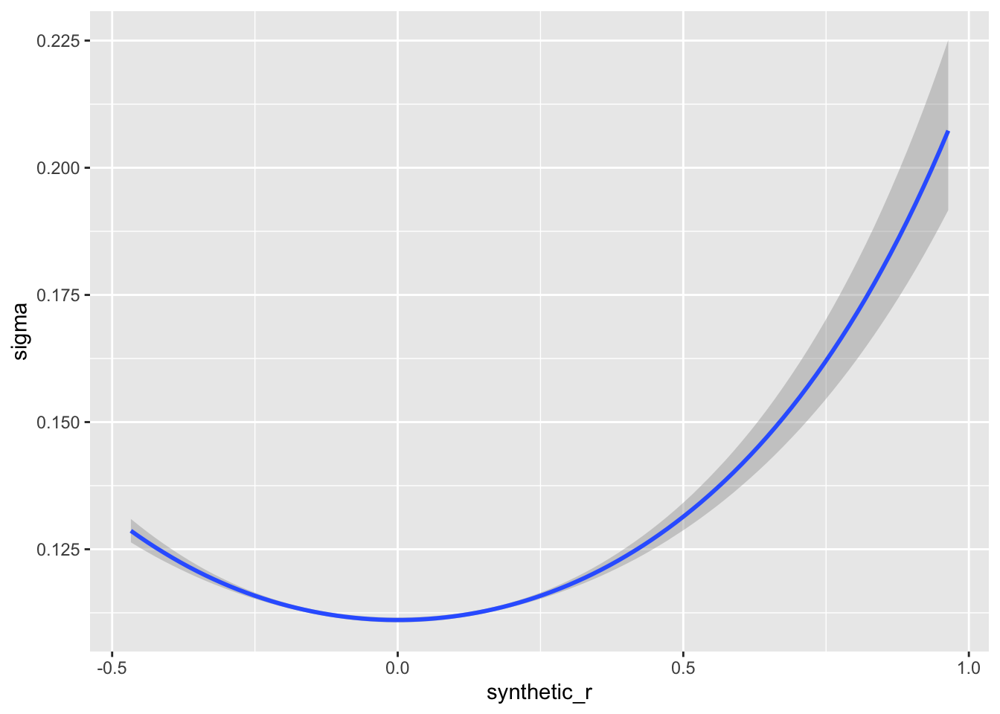
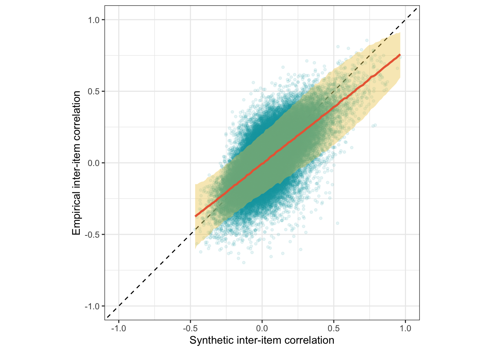
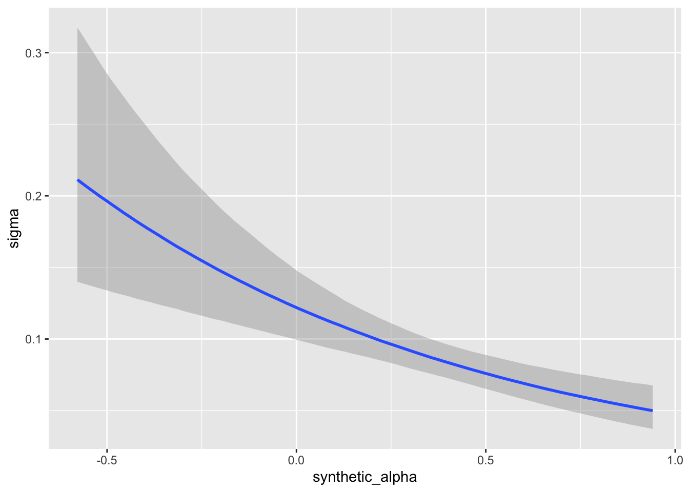
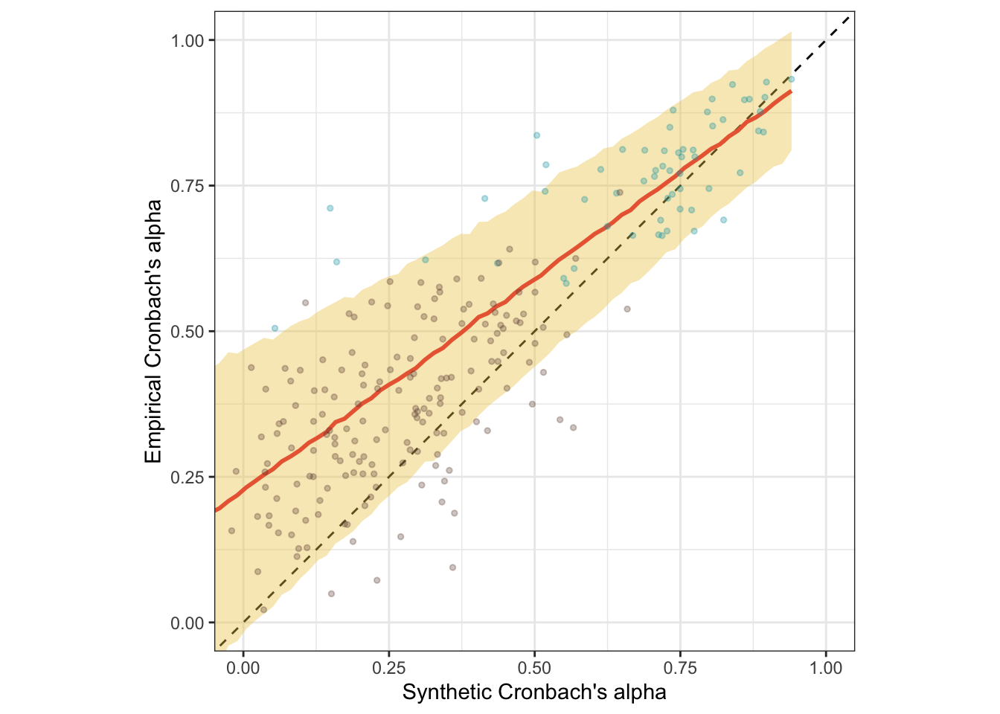
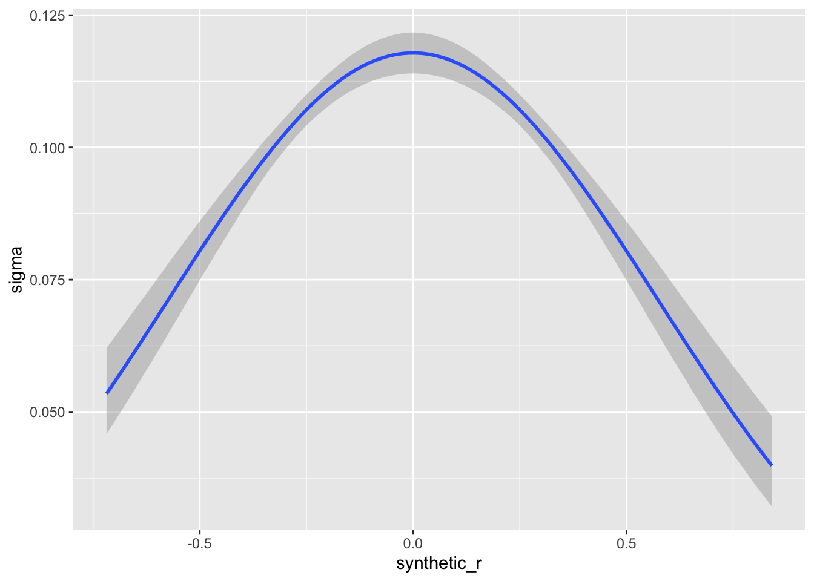
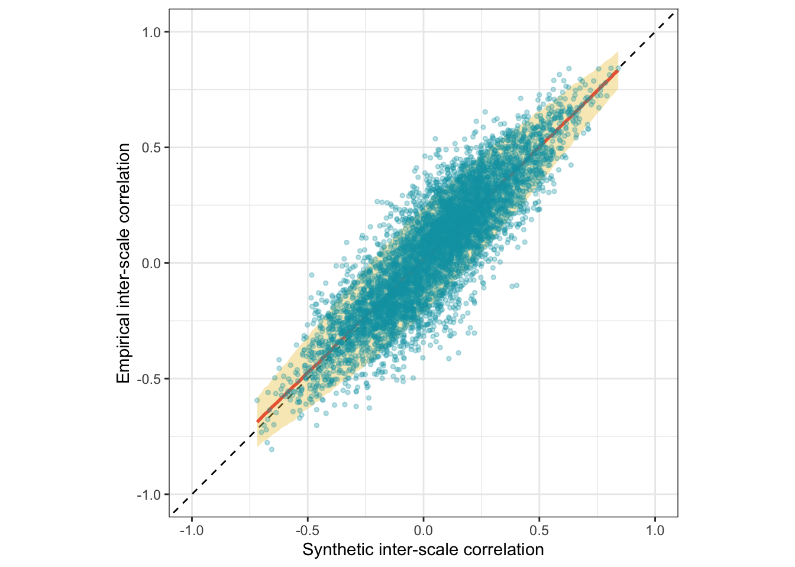
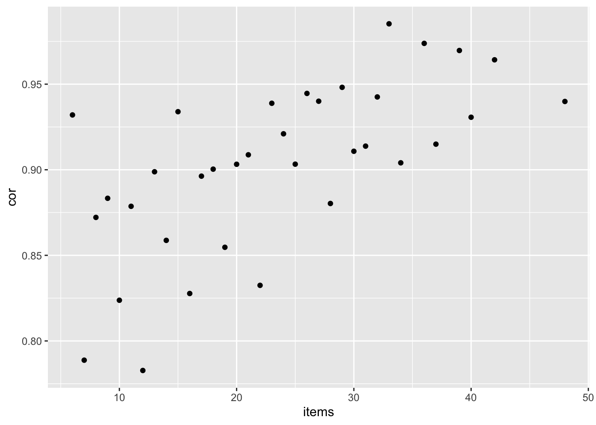

Here, we apply the model to data not used for training, a holdout. The holdout sample was collected by Bainbridge et al. 2022.
knitr::opts_chunk$set(echo = TRUE, error = T, message = F, warning = F)
# Libraries and Settings
# Libs ---------------------------
library(tidyverse)
library(arrow)
library(glue)
library(psych)
library(lavaan)
library(ggplot2)
library(plotly)
library(gridExtra)
library(semTools)
library(semPlot)
library(broom)
library(broom.mixed)
library(brms)
options(mc.cores = parallel::detectCores(),
brms.backend = "cmdstanr",
brms.file_refit = "on_change")
model_name = "ItemSimilarityTraining-20240502-trial12"
#model_name = "item-similarity-20231018-122504"
pretrained_model_name = "all-mpnet-base-v2"
data_path = glue("./")
pretrained_data_path = glue("./")
set.seed(42)
holdout <- arrow::read_feather(file = file.path(data_path, glue("ignore.{model_name}.raw.osf-bainbridge-2021-s2-0.item_correlations.feather")))
holdout_mapping_data = arrow::read_feather(
file = file.path(data_path, glue("{model_name}.raw.osf-bainbridge-2021-s2-0.mapping.feather"))
) %>%
rename(scale_0 = scale0,
scale_1 = scale1)
holdout_human_data = arrow::read_feather(
file = file.path(data_path, glue("{model_name}.raw.osf-bainbridge-2021-s2-0.human.feather"))
)
holdout_scales <- arrow::read_feather(file.path(data_path, glue("{model_name}.raw.osf-bainbridge-2021-s2-0.scales.feather"))
)
N <- holdout_human_data %>% summarise_all(~ sum(!is.na(.))) %>% min()
total_N <- nrow(holdout_human_data)The Bainbridge data was collected on N=493 respondent. The item with the most missing values still had n=480.
holdout_llm <- holdout %>%
left_join(holdout_mapping_data %>% select(variable_1 = variable, InstrumentA = instrument, ScaleA = scale_0, SubscaleA = scale_1)) %>%
left_join(holdout_mapping_data %>% select(variable_2 = variable, InstrumentB = instrument, ScaleB = scale_0, SubscaleB = scale_1))
library(lavaan)
holdout_llm <- holdout_llm %>% mutate(se = (1 - empirical_r^2)/sqrt(N - 2))
se2 <- mean(holdout_llm$se^2)
r <- broom::tidy(cor.test(holdout_llm$empirical_r, holdout_llm$synthetic_r))
model <- paste0('
# Latent variables
PearsonLatent =~ 1*empirical_r
# Fixing error variances based on known standard errors
empirical_r ~~ ',se2,'*empirical_r
# Relationship between latent variables
PearsonLatent ~~ synthetic_r
')
fit <- sem(model, data = holdout_llm)
library(brms)
m_synth_r_items <- brm(
bf(empirical_r | mi(se) ~ 1) +
bf(synthetic_r ~ 1) +
set_rescor(T), data = holdout_llm,
file = "ignore/m_synth_r_items_r")bind_rows(
r %>%
mutate(kind = "manifest") %>%
select(kind, accuracy = estimate, conf.low, conf.high),
standardizedsolution(fit) %>%
filter(lhs == "PearsonLatent", rhs == "synthetic_r") %>%
mutate(kind = "semi-latent (SEM)") %>%
select(kind, accuracy = est.std,
conf.low = ci.lower, conf.high = ci.upper),
summary(m_synth_r_items)$rescor_pars %>%
mutate(kind = "semi-latent (Bayesian EIV)") %>%
select(kind, accuracy = Estimate, conf.low = `l-95% CI`, conf.high = `u-95% CI`)
) %>%
knitr::kable(digits = 2)| kind | accuracy | conf.low | conf.high |
|---|---|---|---|
| manifest | 0.67 | 0.67 | 0.68 |
| semi-latent (SEM) | 0.70 | 0.70 | 0.70 |
| semi-latent (Bayesian EIV) | 0.70 | 0.70 | 0.70 |
(m_lmsynth_r_items <- brm(
bf(empirical_r | mi(empirical_r_se) ~ synthetic_r,
sigma ~ I(synthetic_r^2)), data = holdout_llm,
file = "ignore/m_synth_r_items"))## Family: gaussian
## Links: mu = identity; sigma = log
## Formula: empirical_r | mi(empirical_r_se) ~ synthetic_r
## sigma ~ I(synthetic_r^2)
## Data: holdout_llm (Number of observations: 174306)
## Draws: 4 chains, each with iter = 2000; warmup = 1000; thin = 1;
## total post-warmup draws = 4000
##
## Population-Level Effects:
## Estimate Est.Error l-95% CI u-95% CI Rhat Bulk_ESS
## Intercept -0.01 0.00 -0.01 -0.01 1.00 4002
## sigma_Intercept -2.20 0.00 -2.20 -2.19 1.00 4405
## synthetic_r 0.78 0.00 0.77 0.78 1.00 4037
## sigma_Isynthetic_rE2 0.67 0.05 0.58 0.76 1.00 5755
## Tail_ESS
## Intercept 2828
## sigma_Intercept 3397
## synthetic_r 3180
## sigma_Isynthetic_rE2 2777
##
## Draws were sampled using sample(hmc). For each parameter, Bulk_ESS
## and Tail_ESS are effective sample size measures, and Rhat is the potential
## scale reduction factor on split chains (at convergence, Rhat = 1).pred <- conditional_effects(m_lmsynth_r_items, method = "predict")
conditional_effects(m_lmsynth_r_items, dpar = "sigma")
ggplot(holdout_llm, aes(synthetic_r, empirical_r,
ymin = empirical_r - empirical_r_se,
ymax = empirical_r + empirical_r_se)) +
geom_abline(linetype = "dashed") +
geom_smooth(aes(
x = synthetic_r,
y = estimate__,
ymin = lower__,
ymax = upper__,
), stat = "identity",
color = "#EB6841",
fill = "#EDC951",
data = as.data.frame(pred$synthetic_r)) +
geom_point(color = "#00A0B0", alpha = 0.1, size = 1) +
xlab("Synthetic inter-item correlation") +
ylab("Empirical inter-item correlation") +
theme_bw() +
coord_fixed(xlim = c(-1,1), ylim = c(-1,1)) -> plot_items
plot_items
This plot shows only 2000 randomly selected item pairs to conserve memory. A full interactive plot exists, but may react slowly.
item_pair_table <- holdout_llm %>%
left_join(holdout_mapping_data %>% select(variable_1 = variable,
item_text_1 = item_text)) %>%
left_join(holdout_mapping_data %>% select(variable_2 = variable,
item_text_2 = item_text))
rio::export(item_pair_table, "ignore/item_pair_table.feather")
(item_pair_table %>%
mutate(synthetic_r = round(synthetic_r, 2),
empirical_r = round(empirical_r, 2),
items = str_replace_all(str_c(item_text_1, "\n", item_text_2),
"_+", " ")) %>%
sample_n(2000) %>%
ggplot(., aes(synthetic_r, empirical_r,
# ymin = empirical_r - empirical_r_se,
# ymax = empirical_r + empirical_r_se,
label = items)) +
geom_abline(linetype = "dashed") +
geom_point(color = "#00A0B0", alpha = 0.3, size = 1) +
xlab("Synthetic inter-item correlation") +
ylab("Empirical inter-item correlation") +
theme_bw() +
coord_fixed(xlim = c(-1,1), ylim = c(-1,1))) %>%
ggplotly()item_pair_table <- item_pair_table %>%
mutate(empirical_r = sprintf("%.2f±%.3f", empirical_r,
empirical_r_se),
synthetic_r = sprintf("%.2f", synthetic_r)) %>%
select(item_text_1, item_text_2, empirical_r, synthetic_r)
rio::export(item_pair_table, "item_pair_table.xlsx")holdout_llm %>%
mutate(same_instrument = if_else(InstrumentA == InstrumentB, 1, 0,0),
same_scale = if_else(ScaleA == ScaleB, 1,0,0),
same_subscale = if_else(same_scale & SubscaleA == SubscaleB, 1,0,0)) %>%
group_by(same_scale, same_instrument, same_subscale) %>%
summarise(broom::tidy(cor.test(synthetic_r, empirical_r)), sd_er = sd(empirical_r), n = n()) %>%
select(same_instrument, same_scale, same_subscale, r = estimate, conf.low, conf.high, n, sd_er) %>%
arrange(same_instrument, same_scale, same_subscale)## # A tibble: 5 × 8
## same_instrument same_scale same_subscale r conf.low conf.high n sd_er
## <dbl> <dbl> <dbl> <dbl> <dbl> <dbl> <int> <dbl>
## 1 0 0 0 0.653 0.650 0.655 150728 0.154
## 2 0 1 0 0.822 0.809 0.833 2880 0.293
## 3 1 0 0 0.601 0.590 0.611 14400 0.137
## 4 1 1 0 0.772 0.761 0.782 5864 0.280
## 5 1 1 1 0.790 0.752 0.823 434 0.229Full table of synthetic and empirical item pair correlations
cors_llm <- holdout_llm %>%
select(x = variable_1, y = variable_2, r = synthetic_r) %>%
as.data.frame() |>
igraph::graph_from_data_frame(directed = FALSE) |>
igraph::as_adjacency_matrix(attr = "r", sparse = FALSE)
diag(cors_llm) <- 1
cors_real <- holdout_llm %>%
select(x = variable_1, y = variable_2, r = empirical_r) %>%
as.data.frame() |>
igraph::graph_from_data_frame(directed = FALSE) |>
igraph::as_adjacency_matrix(attr = "r", sparse = FALSE)
diag(cors_real) <- 1
mapping_data <- holdout_mapping_data
items_by_scale <- bind_rows(
holdout_scales %>% filter(scale_1 == "") %>% left_join(mapping_data %>% select(-scale_1), by = c("instrument", "scale_0")),
holdout_scales %>% filter(scale_1 != "") %>% left_join(mapping_data, by = c("instrument", "scale_0", "scale_1"))
)
scales <- items_by_scale %>%
group_by(keyed, scale) %>%
summarise(
items = list(variable),
number_of_items = n_distinct(variable),
lvn = paste(first(scale), " =~ ", paste(variable, collapse = " + "))) %>%
drop_na() %>%
ungroup()
random_scales <- list()
for(i in 1:200) {
n_items <- rpois(1, mean(scales$number_of_items))
n_items <- if_else(n_items < 3, 3, n_items)
random_scales[[i]] <- holdout_mapping_data %>%
sample_n(n_items) %>%
mutate(scale = paste0("random", i)) %>%
group_by(scale) %>%
summarise(
items = list(variable),
number_of_items = n_distinct(variable),
lvn = paste(first(scale), " =~ ", paste(variable, collapse = " + "))) %>%
drop_na() %>%
mutate(keyed = 1)
}
random_scales <- bind_rows(random_scales)
scales <- bind_rows(scales, random_scales)
n_distinct(scales$scale)## [1] 313source("global_functions.R")
scales <- scales %>% filter(number_of_items >= 3)
scales <- scales %>%
rowwise() %>%
mutate(r_real = list(cors_real[items, items]),
r_llm = list(cors_llm[items, items])) %>%
mutate(reverse_items = list(find_reverse_items_by_first_item(r_real, keyed)),
r_real_rev = list(reverse_items(r_real, reverse_items)),
r_llm_rev = list(reverse_items(r_llm, reverse_items))) %>%
mutate(
rel_real = list(psych::alpha(r_real_rev, keys = F, n.obs = N)$feldt)) %>%
mutate(
rel_llm = list(psych::alpha(r_llm_rev, keys = F, n.obs = N)$feldt)) %>%
mutate(empirical_alpha = rel_real$alpha$raw_alpha,
synthetic_alpha = rel_llm$alpha$raw_alpha) %>%
mutate(
empirical_alpha_se = mean(diff(unlist(psychometric::alpha.CI(empirical_alpha, k = number_of_items, N = N, level = 0.95))))
)
scales <- scales %>% filter(empirical_alpha > 0)
# qplot(scales$empirical_alpha_se)
# qplot(scales$empirical_alpha, scales$empirical_alpha_se)
# qplot(scales$number_of_items, scales$empirical_alpha_se)
# qplot(scales$empirical_alpha, scales$empirical_alpha_se, color = scales$number_of_items)
se2 <- mean(scales$empirical_alpha_se^2)
r <- broom::tidy(cor.test(scales$empirical_alpha, scales$synthetic_alpha))
model <- paste0('
# Latent variables
latent_real_rel =~ 1*empirical_alpha
# Fixing error variances based on known standard errors
empirical_alpha ~~ ',se2,'*empirical_alpha
# Relationship between latent variables
latent_real_rel ~~ synthetic_alpha
')
fit <- sem(model, data = scales)m_synth_r_rels <- brm(
bf(empirical_alpha | mi(empirical_alpha_se) ~ 1) +
bf(synthetic_alpha ~ 1) +
set_rescor(T),
data = scales,
file = "ignore/m_synth_r_rels")
bind_rows(
r %>%
mutate(kind = "manifest") %>%
select(kind, accuracy = estimate, conf.low, conf.high),
standardizedsolution(fit) %>%
filter(lhs == "latent_real_rel", rhs == "synthetic_alpha") %>%
mutate(kind = "semi-latent (SEM)") %>%
select(kind, accuracy = est.std,
conf.low = ci.lower, conf.high = ci.upper),
summary(m_synth_r_rels)$rescor_pars %>%
mutate(kind = "semi-latent (Bayesian EIV)") %>%
select(kind, accuracy = Estimate, conf.low = `l-95% CI`, conf.high = `u-95% CI`)
) %>%
knitr::kable(digits = 2)| kind | accuracy | conf.low | conf.high |
|---|---|---|---|
| manifest | 0.84 | 0.80 | 0.87 |
| semi-latent (SEM) | 0.91 | 0.88 | 0.95 |
| semi-latent (Bayesian EIV) | 0.91 | 0.88 | 0.94 |
(m_lmsynth_r_scales <- brm(
bf(empirical_alpha | mi(empirical_alpha_se) ~ synthetic_alpha,
sigma ~ synthetic_alpha), data = scales,
file = "ignore/m_synth_rel_lm"))## Family: gaussian
## Links: mu = identity; sigma = log
## Formula: empirical_alpha | mi(empirical_alpha_se) ~ synthetic_alpha
## sigma ~ synthetic_alpha
## Data: scales (Number of observations: 254)
## Draws: 4 chains, each with iter = 2000; warmup = 1000; thin = 1;
## total post-warmup draws = 4000
##
## Population-Level Effects:
## Estimate Est.Error l-95% CI u-95% CI Rhat Bulk_ESS
## Intercept 0.22 0.01 0.20 0.25 1.00 3399
## sigma_Intercept -2.10 0.10 -2.31 -1.91 1.00 2291
## synthetic_alpha 0.73 0.03 0.68 0.78 1.00 3858
## sigma_synthetic_alpha -0.95 0.22 -1.38 -0.52 1.00 3274
## Tail_ESS
## Intercept 3293
## sigma_Intercept 2653
## synthetic_alpha 3265
## sigma_synthetic_alpha 3314
##
## Draws were sampled using sample(hmc). For each parameter, Bulk_ESS
## and Tail_ESS are effective sample size measures, and Rhat is the potential
## scale reduction factor on split chains (at convergence, Rhat = 1).pred <- conditional_effects(m_lmsynth_r_scales, method = "predict")
conditional_effects(m_lmsynth_r_scales, dpar = "sigma")
ggplot(scales, aes(synthetic_alpha, empirical_alpha,
color = str_detect(scale, "^random"),
ymin = empirical_alpha - empirical_alpha_se,
ymax = empirical_alpha + empirical_alpha_se)) +
geom_abline(linetype = "dashed") +
geom_smooth(aes(
x = synthetic_alpha,
y = estimate__,
ymin = lower__,
ymax = upper__,
), stat = "identity",
color = "#EB6841",
fill = "#EDC951",
data = as.data.frame(pred$synthetic_alpha)) +
geom_point(alpha = 0.3, size = 1) +
scale_color_manual(values = c("#00A0B0", "#6A4A3C"),
guide = "none") +
xlab("Synthetic Cronbach's alpha") +
ylab("Empirical Cronbach's alpha") +
theme_bw() +
coord_fixed(xlim = c(0,1), ylim = c(0,1)) -> plot_scales
plot_scales
(scales %>%
filter(!str_detect(scale, "^random")) %>%
mutate(synthetic_alpha = round(synthetic_alpha, 2),
empirical_alpha = round(empirical_alpha, 2),
scale = str_replace_all(scale, "_+", " ")) %>%
ggplot(., aes(synthetic_alpha, empirical_alpha,
# ymin = empirical_r - empirical_r_se,
# ymax = empirical_r + empirical_r_se,
label = scale)) +
geom_abline(linetype = "dashed") +
geom_point(alpha = 0.3, size = 1, color = "#00A0B0") +
xlab("Synthetic Cronbach's alpha") +
ylab("Empirical Cronbach's alpha") +
theme_bw() +
theme(legend.position='none') +
coord_fixed(xlim = c(0,1), ylim = c(0,1))) %>%
ggplotly()scales %>%
filter(!str_detect(scale, "^random")) %>%
mutate(empirical_alpha = sprintf("%.2f±%.3f", empirical_alpha,
empirical_alpha_se),
synthetic_alpha = sprintf("%.2f", synthetic_alpha),
scale = str_replace_all(scale, "_+", " ")
) %>%
select(scale, empirical_alpha, synthetic_alpha, number_of_items) %>%
DT::datatable(rownames = FALSE,
filter = "top")scales %>%
group_by(str_detect(scale, "^random")) %>%
summarise(broom::tidy(cor.test(synthetic_alpha, empirical_alpha)), sd_alpha = sd(empirical_alpha), n = n())## # A tibble: 2 × 11
## `str_detect(scale, "^random")` estimate statistic p.value parameter conf.low
## <lgl> <dbl> <dbl> <dbl> <int> <dbl>
## 1 FALSE 0.763 8.99 1.37e-12 58 0.631
## 2 TRUE 0.666 12.4 3.40e-26 192 0.579
## # ℹ 5 more variables: conf.high <dbl>, method <chr>, alternative <chr>,
## # sd_alpha <dbl>, n <int>manifest_scores = arrow::read_feather(file = file.path(data_path, glue("ignore.{model_name}.raw.osf-bainbridge-2021-s2-0.scale_correlations.feather")))
n_distinct(manifest_scores$scale_a)## [1] 112manifest_scores <- manifest_scores %>%
left_join(scales, by = c("scale_a" = "scale")) %>%
left_join(scales, by = c("scale_b" = "scale"))r <- broom::tidy(cor.test(manifest_scores$empirical_r, manifest_scores$synthetic_r))
se2 <- mean(manifest_scores$empirical_r_se^2)
model <- paste0('
# Latent variables
PearsonLatent =~ 1*empirical_r
# Fixing error variances based on known standard errors
empirical_r ~~ ',se2,'*empirical_r
# Relationship between latent variables
PearsonLatent ~~ synthetic_r
')
fit <- sem(model, data = manifest_scores)
m_synth_r_scales <- brm(
bf(empirical_r | mi(empirical_r_se) ~ 1) +
bf(synthetic_r ~ 1) +
set_rescor(T), data = manifest_scores,
file = "ignore/m_synth_r_scales")
bind_rows(
r %>%
mutate(kind = "manifest") %>%
select(kind, accuracy = estimate, conf.low, conf.high),
standardizedsolution(fit) %>%
filter(lhs == "PearsonLatent", rhs == "synthetic_r") %>%
mutate(kind = "semi-latent (SEM)") %>%
select(kind, accuracy = est.std,
conf.low = ci.lower, conf.high = ci.upper),
summary(m_synth_r_scales)$rescor_pars %>%
mutate(kind = "semi-latent (Bayesian EIV)") %>%
select(kind, accuracy = Estimate, conf.low = `l-95% CI`, conf.high = `u-95% CI`)
) %>%
knitr::kable(digits = 2)| kind | accuracy | conf.low | conf.high |
|---|---|---|---|
| manifest | 0.87 | 0.86 | 0.87 |
| semi-latent (SEM) | 0.91 | 0.91 | 0.92 |
| semi-latent (Bayesian EIV) | 0.91 | 0.91 | 0.92 |
(m_lmsynth_r_scales <- brm(
bf(empirical_r | mi(empirical_r_se) ~ synthetic_r,
sigma ~ I(synthetic_r^2)), data = manifest_scores,
file = "ignore/m_synth_r_scales_lm3"))## Family: gaussian
## Links: mu = identity; sigma = log
## Formula: empirical_r | mi(empirical_r_se) ~ synthetic_r
## sigma ~ I(synthetic_r^2)
## Data: manifest_scores (Number of observations: 6245)
## Draws: 4 chains, each with iter = 2000; warmup = 1000; thin = 1;
## total post-warmup draws = 4000
##
## Population-Level Effects:
## Estimate Est.Error l-95% CI u-95% CI Rhat Bulk_ESS
## Intercept 0.01 0.00 0.01 0.02 1.00 4525
## sigma_Intercept -2.14 0.02 -2.17 -2.11 1.00 2333
## synthetic_r 0.98 0.01 0.96 0.99 1.00 4575
## sigma_Isynthetic_rE2 -1.53 0.17 -1.86 -1.21 1.00 2173
## Tail_ESS
## Intercept 3478
## sigma_Intercept 2700
## synthetic_r 3150
## sigma_Isynthetic_rE2 2994
##
## Draws were sampled using sample(hmc). For each parameter, Bulk_ESS
## and Tail_ESS are effective sample size measures, and Rhat is the potential
## scale reduction factor on split chains (at convergence, Rhat = 1).pred <- conditional_effects(m_lmsynth_r_scales, method = "predict")
conditional_effects(m_lmsynth_r_scales, dpar = "sigma")
ggplot(manifest_scores, aes(synthetic_r, empirical_r,
ymin = empirical_r - empirical_r_se,
ymax = empirical_r + empirical_r_se)) +
geom_abline(linetype = "dashed") +
geom_smooth(aes(
x = synthetic_r,
y = estimate__,
ymin = lower__,
ymax = upper__,
), stat = "identity",
color = "#EB6841",
fill = "#EDC951",
data = as.data.frame(pred$synthetic_r)) +
geom_point(color = "#00A0B0", alpha = 0.3, size = 1) +
xlab("Synthetic inter-scale correlation") +
ylab("Empirical inter-scale correlation") +
theme_bw() +
coord_fixed(xlim = c(-1,1), ylim = c(-1,1)) -> plot_scales
plot_scales
(manifest_scores %>%
mutate(synthetic_r = round(synthetic_r, 2),
empirical_r = round(empirical_r, 2),
scales = str_replace_all(str_c(scale_a, "\n", scale_b),
"_+", " ")) %>%
ggplot(., aes(synthetic_r, empirical_r,
# ymin = empirical_r - empirical_r_se,
# ymax = empirical_r + empirical_r_se,
label = scales)) +
geom_abline(linetype = "dashed") +
geom_point(color = "#00A0B0", alpha = 0.3, size = 1) +
xlab("Synthetic inter-scale correlation") +
ylab("Empirical inter-scale correlation") +
theme_bw() +
coord_fixed(xlim = c(-1,1), ylim = c(-1,1))) %>%
ggplotly()manifest_scores %>%
mutate(empirical_r = sprintf("%.2f±%.3f", empirical_r,
empirical_r_se),
synthetic_r = sprintf("%.2f", synthetic_r),
scale_a = str_replace_all(scale_a, "_+", " "),
scale_b = str_replace_all(scale_b, "_+", " ")
) %>%
select(scale_a, scale_b, empirical_r, synthetic_r) %>%
DT::datatable(rownames = FALSE,
filter = "top")How does number of items across the two scales relate to accuracy?
manifest_scores %>%
mutate(items = number_of_items.x + number_of_items.y) %>%
group_by(items) %>%
summarise(cor = cor(empirical_r, synthetic_r), n()) %>%
ggplot(aes(items, cor)) +
geom_point()
manifest_scores %>%
filter(number_of_items.x >= 10, number_of_items.y >= 10) %>%
summarise(cor = cor(empirical_r, synthetic_r), n())## # A tibble: 1 × 2
## cor `n()`
## <dbl> <int>
## 1 0.932 253